I have always written about why the fundamentals are important and how they could help you as a programmer.
But, I never had directly written what the fundamentals were.
That is what this series is.
This article is a direct explanation of the fundamentals.
Let's get into it....
Data structure
A data structure is anything that holds binary numbers.
In software this means variables, classes and even the code source itself.
The reason we use the word structure is because the memory container for binary numbers is always structured by the developer.
The memory is ordered for faster and easier access.
The idea of organized storage is a data structure.
No matter what you do, in order to create any program you need data structures.
Data types
Data types are the name of the data structure you are using.
Lets say we want to create data or reserve memory for future use.
We can create a specific data type by naming and writing its type.
Take a look...
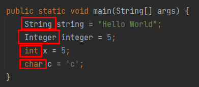We are saying, "hey, reserve some memory for a String, Integer, int, char".
All of those are data structures which have previously been written for us to put values inside.
Data types are the type of data structure we are using.
Primitives
Primitives are the built-in data types of a programming language.
Primitives typically have a different color in an IDE and often are treated differently in code than other data structures.
These are considered special in the language.
Primitives are used to build the entirety of bigger data structures.
Lets take a look at the primitives in Python:
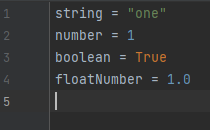Now lets take a look at the primitives in Java:
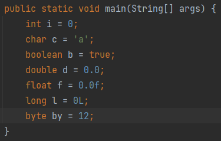Notice the orange coloring in Java.
This is typical in most programming languages.
Just remember, they are primitive because they have no sophistication and are built-in the language.
They hold data in a certain format and every other data structure is built on them..
They are the lowest level memory containers built-in to the language.
Variables
Variables are the actual container in programming.
We them and use them after they are defined
They specify that you are placing something in memory in a specific format.
Take a look:
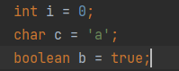i, c, b are three variables stored in three different data types.
i is an integer data type AKA data structure.
c is a character data type.
b is a boolean data type.
Each has a different size in bits of 0s and 1s and each is treated differently in code.
When we create a variable we place a value to it. This value has to be specific to that variable's data type.
Keywords
Keywords are any words which are reserved by the programming language.
Many have been created for us and cannot be used for naming things.
In an IDE built-in keywords are always colored differently and cannot be used to describe things as names.
Look at these for example...
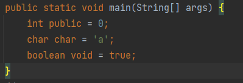These are the keywords in the picture...
- int
- public
- char
- boolean
- void
- static
- true
Notice how I have used keywords to name a variable.
I cannot do this for any naming and get errors.
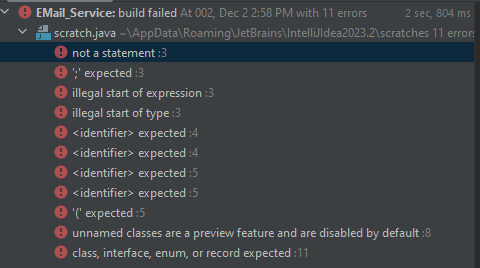Keywords are reserved and can only be used in ways specified by the language.
Blocks
Blocks are chunks of code within 1 file which represent a section in code.
If you take any code file and pick a level that entire level is a block.
They key rules are..
- It must be in one file
- It must not skip any lines
- It must be on the same level
Let us look at some examples...
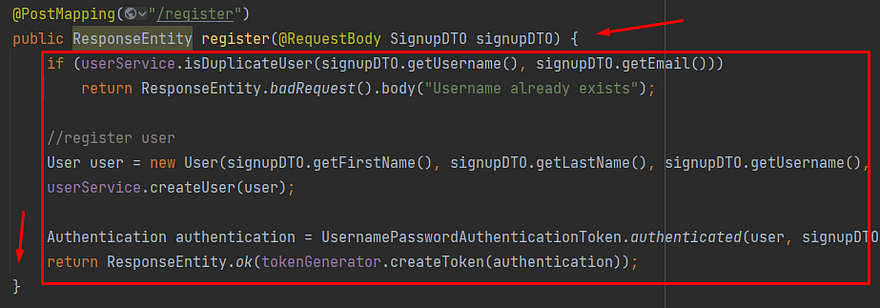The brackets in this code example note that there is a certain level.
These brackets make the entire inner code a block.
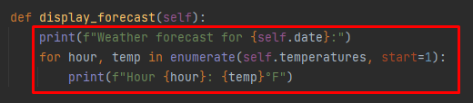In Python, blocks are considered using indentation.
This means anything with open and close brackets are blocks...
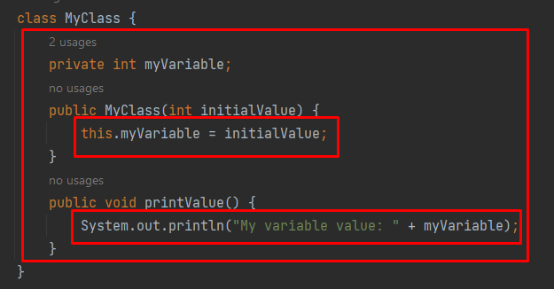In that picture, each block is a red rectangle.
Notice the open and close brackets express it is a block.
Look at the blocks in Python...
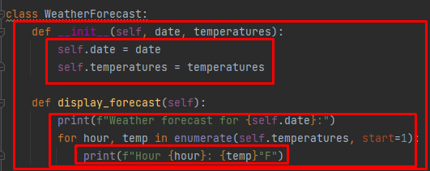It is because the indentations replace the curly brackets.
Scope
Within each block is considered a scope.
So usually, when you enter a code block the variables on the outside of the block enter into the inner block.
Take a look at variable x in this example where it is passed into inner blocks.
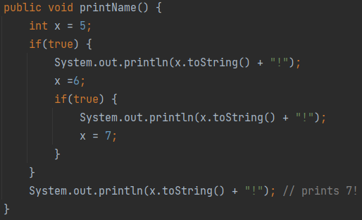Notice the open and close brackets, showing inner blocks.
x is passed into the inner blocks, called an inner scope.
It stays defined at the outer most level because it was created in the outer most level.
The level or block level it was created it is called the scope.
This is the scope of where it was defined.
The inner blocks inherit the outer block and as the variable changes it remains.
Scope means within these blocks and the blocks inside it, the variable is defined in memory.
Loops
Loops are statements which make future statements repeat.
There are typically two types of loops...
- For loops
- While loops
For loops are intended to repeat code a finite number of times.
While loops are intended to repeat infinitely but break the loop when you want to.
Here is an example of a for loop...
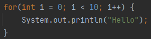Can you guess what it does?
From left to right if you read the inner parenthesis of the for loop we do three things...
- Define i as 0
- Set a break once i hits 10
- Add 1 to i at the end of the block.
Another way to write this is with a while loop...
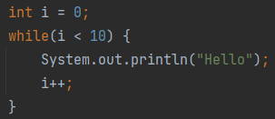They both do the same thing.
i is defined as 0 and passed inside the loop's code block and the code block repeats 10 times.
Lets see what i looks like...
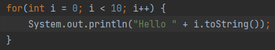 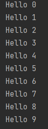Once i reaches 10 it breaks.
Inside the while loop we have a condition which can be set for when we want to break a potentially infinite loop.
Meaning this print hello will never run...
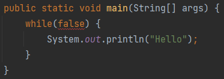Arrays
Arrays are lists of data types, including primitives.
In most programming languages the square brackets determine what is an array.
Like so...
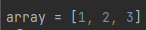Python
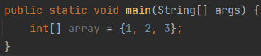Java
In both these languages it is the same thing, but Java is just more cumbersome.
We are creating an array of int primitives.
Say we want to create an array of a non-primitive data type, like String.
It would look like this...
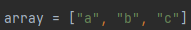 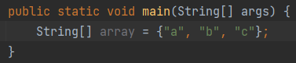Function
These are blocks of code which can be re-run.
For example:
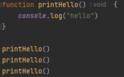Code
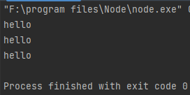Output
printHello() in this case is a function which we can re-run.
Let's see this same thing in Python...
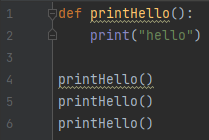Python code
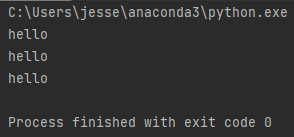Output
And now in Java...
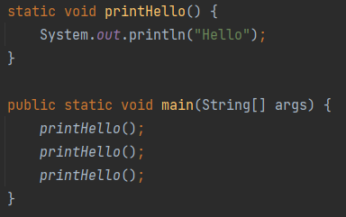Java code
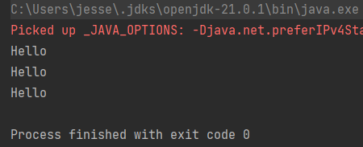Output
What is cool, we can place functions inside functions...
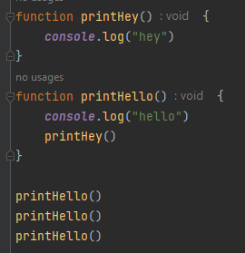Javascript Code
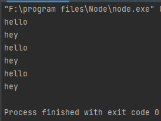Output
Pretty cool right?
We can place mostly any code inside functions then re-run it.
Anywho, I hope you learned something...
Happy coding!
Resources
Why fundamentals are important: Why Coding Fundamentals Are Important & Questions You Should Be Asking
What is Computer Science: A Short and Insightful Answer: What is Computer Science?